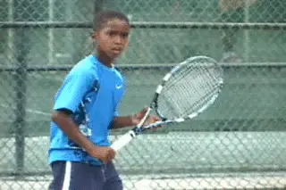
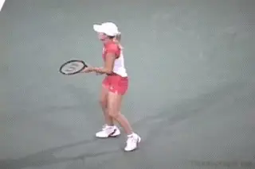
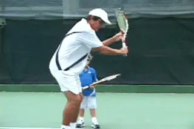
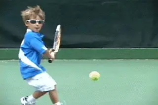
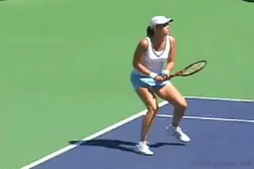
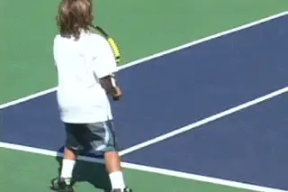
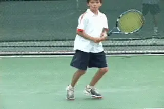
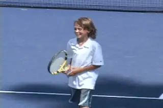

Previous: Secrets of the Wide Slice | 🏠 Famous Coaches Home | Next: Starting Kids Right - The Forehand
Starting Kids Right: The Backhand
Comprehensive unified tennis knowledge base — Fundamentals, Stroke Analysis, Reference Library, and more
Starting Kids Right: The Backhand
Rick Macci

When is it one hand and when is it two?
As a coach, you need to have a smorgasbord of options, and that is definitely true when it comes to teaching kids the backhand. Sometimes I think we get too pigeonholed as coaches and say, “Here's what I'm doing.” Even if a coach has had success, it might be in spite of what he believes or does on the court.
So the big question when it comes to the backhand for young kids is should you always teach two hands? When, if ever, do you teach a 5 or 6 year old a one-handed backhand? The answer is going to be in the eye of the beholder, but the decision can have a huge impact on the career of a young player.
On the backhand, whichever way you go, how you teach the basics and what you ask kids to do when are huge factors in their technical development.
So in this article let me lay out some of my thoughts on teaching kids both the one-handed and two-handed backhand, and also how to decide between them.

Justine Henin started with one-hand and took it all the way to the top.
One Handed Backhand
No doubt one of the most difficult possible shots for any little kid to hit is a one-handed backhand. This is due to the obvious issues of size and strength. But many great players, Justine Henin for example, have started with one-handed backhands at an early age and never looked back. So how do you make the decision to teach a one-hander from the beginning?
Sometimes the parent says “I want my kid to play with one hand.” So if that's the case, I'll show them a one-handed backhand, at least at the start. But I also like to give the kids a test. If they hit with two hands, I’ll say, “Try to hit it with one.”
The results of this little test are definitely in the eye of the beholder, because you are not going to see an accomplished one-handed stroke. And if you go forward with the one-hander, you are not going to see initial competitive results equal to what most young kids can achieve using two hands.
But what if that one-hander looks natural? What if, without any instruction or any real practice, it just looks like the kid’s body is saying “I want to hit a one-handed backhand? Then I teach that player a one-handed backhand.

The shoulder turn, the loop, the drop into the hit, and the use of the legs and left arm—all critical on the one-hander.
If we force all kids to hit two-handers in the hope of getting immediate success, we will end up diminishing some players’ natural instincts for the game. What I'm looking for is the individual flair and style, the pizazz, that is flowing in every kids blood. But sometimes it can be hard to see that in a 5, 6, or 7 year old.
Teaching a young kid a one-hander can be amazing. I put them into an Eastern backhand grip. I stress the importance of the shoulder turn and how that initiates the motion.
I get them right into a loop backswing. Then I show them how the drop of the racket from the top of the loop leads into the hit.
I don't want them out there trying to hit mainly with their arms. So I emphasize using the legs. I emphasize trying to stay sideways with the torso. I emphasize the left arm moving backwards the other way with the forward swing.
I want them to feel that when you swing slower, you actually do better. I want them to understand that power comes from timing and rhythm. When you swing faster, if you're a little kid, your body blows up like a grenade. It doesn't work. So I emphasize that.
Are you going to see all these factors perfectly mastered in a young kid? No, but if the kid is natural with one-hand, you will see that occur over time.

If the kid’s body is screaming one-handed backhand, go with it.
The key to all this is patience. You've got to make sure the kids get the ball at a speed and at a height where it's possible to make a correct swing. The degree of difficulty is key.
You've got to decide how feed the ball. Am I going drop the ball from 2 feet away from the little guy? Am I dropping the ball 5 from feet away? Am I throwing it into the strike zone? All these things come into play.
You can’t necessarily start feeding balls out of the basket from the other side of the net. If you're feeding from the net, telling the kid to judge it, the kid might be over there improvising for 3 years.
For almost all girls I prefer the two-handed backhand. But if I saw that real flair for a one-hander, like Gabriela Sabatini or Justine Henin then I wouldn’t hesitate to develop the one-hander.
Steffi Graf is maybe the best example of all. She was criticized for never coming over her backhand. But in reality she had the perfect game for women's tennis. I still don't understand why it's not duplicated.
She chiseled the ball 2 inches off the ground with her backhand slice. This was tough for the two-handers to deal with, most of whom didn’t slice that well themselves. As soon as they popped the ball up or hit too short or too much to the middle, Steffi was there waiting with that huge forehand.
All things considered, the two-hander is still the way to go for most kids.
Two-Handed Backhand
Statistically, for the majority of kids, the one-hander is the exception. Almost all boys and girls I see want to hit with two hands. They instinctively feel they're stronger, that they can get more power, that they can get more balls over the net.
For these reasons, the parents like it. So they jump on that bandwagon fast. Just because it's easier that doesn't necessarily mean it’s always better, but usually, it is. Once again, this in the eye of the beholder.
From the technical point of view, the best thing about teaching the two-handed backhand is how easily the kids learn to start the motion by turning the shoulders.
Having both hands on the racket, naturally facilitates a better shoulder turn, without the kids having to think about it. They just get the feeling of rotating the body rotate more easily.
They are going to coil more, and when they do this, they are going to let the shoulders bring the racket through the ball on the forward swing. The kids feel that everything is connected. There is less that can go wrong. The results are usually better, faster. Better than the one-hander, and often better than the forehand. That’s the bottom line in junior tennis.
You can even see this on the women's pro tour. Almost all the players with two-handed backhands are better on the backhand side. There have been exceptions such as Lindsay Davenport, Jennifer Capriati, and Justine Henin. Ana Ivanovic is a current player who also has a great forehand. But still, a huge percentage have weaker forehands and are better on the backhand side.

Relatively few top women have had great forehands.
The other big advantage of the two-hander for kids when they are learning is in dealing with the high ball. When the ball is above their shoulders they can play defense more easily. If it’s not too high they can attack it. It's usually more advantageous on the return of serve when players want to be aggressive. It just naturally develops into more of an attacking type of shot.

Learning the slice from the beginner is critical for becoming an all around player.
Slice
For the two-handers, one the most important things in my opinion is to teach them a one-handed slice from the beginning. It’s huge. As I have said many other times in these articles, I believe in creating complete, all around players.
A one-handed slice facilitates this. It teaches touch and feel. It gives the players an approach shot at an early age. It expedites the learning curve for the one-handed volley. It allows them to develop a drop shot. Maybe even to learn to play that same style as Steffi Graf we talked about before. So in a future article I am going to go into teaching the slice in detail.
But for now, one point that is important is the ready position. For two-handers, I prefer that in the ready position the left hand is on the throat of the racket. I want them to wait more athletically, more like they're holding the racket like a magician, more like the racket is a paintbrush in their hand.
The ready position, the shoulder turn, the compact backswing, and the extension on the followthrough.
This helps with the turn on the forehand, where the stretch of the left arm is so important. It also makes it natural to start the turn for the slice. Then when the player is going to hit the two-handed drive, the hand slides down into the two-handed grip.
When it comes to the shape of the swing on the two-hander, I feel players should start with the simplest, most compact motion. Basically this means that as the shoulders turn, the hands go straight back. Then as the racket comes forward, they go straight through. Just as with the forehand, I want the players to learn to extend on the followthrough.

Players should be comfortable hitting the backhand from all stances.
Another important point in developing the backhand is the use of stances. I teach the players to step in. But I also feel it’s very important to teach them to hit open stance.
When we drill I’ll have the kids go back and forth from ball to ball and direct them which stance to use. I want them to feel what it’s like to position to various balls in different ways. Then as they develop this tends to become natural. They’ll make the decision situationally without having to think about it.

The whole process needs to be fun—or why bother?
Life Changers
As I said, working with more younger kids in the last year has been fun for me, and I think I have learned a lot about how to give young players the best possible start. Which brings me back to the first point I made in this series. The best possible start is the most fun start. The start that makes the kids feel the best about themselves not only as tennis players, but as people.
I don’t think it’s worth it any other way, not for the kids, and certainly not for me. If I didn’t truly believe that then I’d probably have to agree with the people who have said I’m crazy to spend 10 hours a day on the tennis court in the summer in Florida.
With the kids, all the theories, all the technical information, that's all irrelevant unless the process is fun. You have to make it very, very fun. To do this, you have to feel the moment when you can focus on the technical issues, and when you have to use motivational skills and even entertainment skills to keep them engaged.
At our best as coaches we're not just tennis teachers. Especially at this early stage of the game, we're life changers, or I hope we are.
Rick Macci has coached some of the greatest players in the modern game during their critical, formative years. He is widely regarded as one the world's top developmental coaches. Rick and his staff have shaped the strokes of Jennifer Capriati, Venus and Serena Williams, Andy Roddick, and dozens of other successful tour players. In the last 30 years, Macci students have won 134 USTA national junior championships, and have been awarded over 4 million dollars in college scholarships. Rick is a USPTA Master Pro and a member of the USPTA Florida Hall of Fame.
The Rick Macci Academy is located in Boca Raton, Florida at the beautiful Boca Logo Country Club, where Rick works in collaboration with Dr. Brian Gordon in implementing their new world class training system.
For more information about Rick's Academy, email him at: info@rickmacci.com or call Rick Macci directly at: (561) 445-2747
Source: tennisplayer.net archive — Starting Kids Right - The Backhand.docx (John Yandell teaching library, 2002-2022). Extracted and rendered as HTML for Tennis Future Lab.